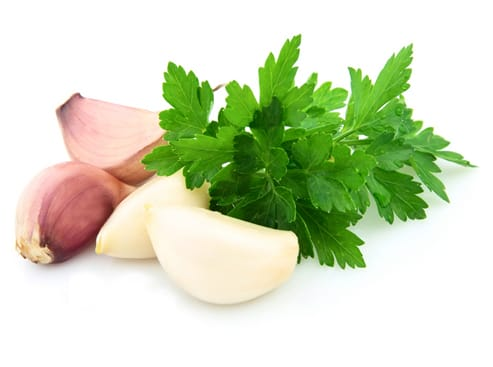
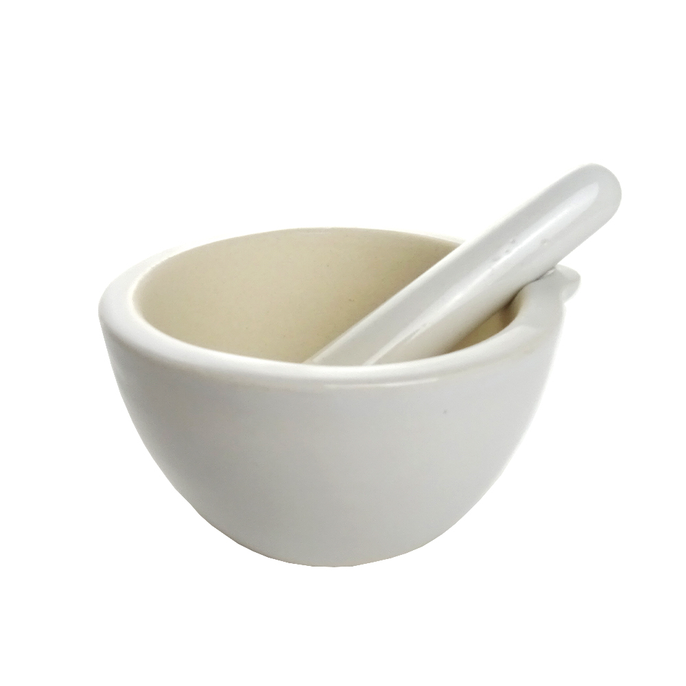
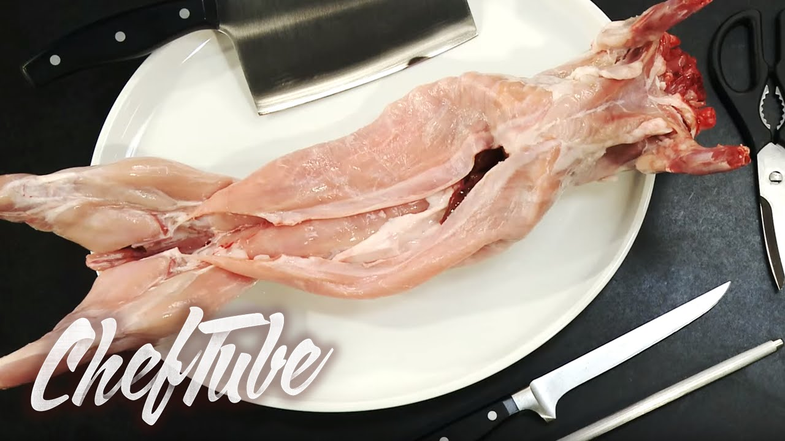
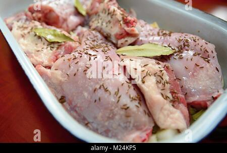

Segundo Plato
Conejo al horno
Indice
Ingredientes:
- Conejo entero o troceado en piezas grandes -- 1
- Diente de ajo -- 2
- Perejil un manojito -- 1
- Patata mediana -- 3
- Sal y pimienta al gusto
- Agua medio vaso
- Aceite de oliva virgen extra un chorreón
Paso a paso:
- Comenzamos preparando un majado de ajo y perejil.

- Picamos el perejil muy fino y hacemos la misma operación con los dientes de ajo. Agregamos unos granitos de sal y majamos en el mortero.

- Cortamos el conejo si lo compramos entero en presas de tamaño grande y las sazonamos ligeramente.

- Después las embadurnamos con el majado de ajo y perejil y las reservamos 15 minutos para que los sabores penetren en la carne blanca del conejo.

- Pelamos las patatas y las cortamos en rodajas gruesas, sazonándolas al gusto. Hacemos una cama con las patatas en una fuente de horno, agregamos medio vaso de agua y un chorreón de aceite de oliva y añadimos las tajadas del conejo, de forma que no toquen el líquido, colocándolas sobre las patatas.

Resultado final: